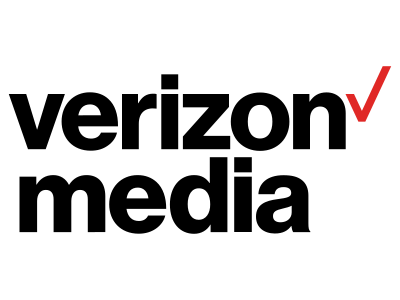

02
My Experience
-
Aug 2019 - May 2021
 New York University
New York UniversityM.S. Computer Engineering
Deep Learning, Operation System, Computer System and Architecture... and so on.
-
Jun 2020 - Aug 2020
 Verizon Media
software Develope Intern
Developed API for tracking and Build operational board for proactive monitoring.
-
Jan 2018 - Aug 2019
 Dcard Taiwan Ltd. : Alexa top 15 site in Taiwan
Dcard Taiwan Ltd. : Alexa top 15 site in TaiwanData Engineer / Machine Learning Engineer
Designed and implemented Recommendation & Ranking System
Researched and developed NLP application -
June 2017
National Taiwan University
B.S & M.S. Civil Engineerinng
Analyzed patterns of energy usage in households using iterative Gaussian Mixture Model; integrated quantitative data and qualitative data of 300 household (collaborative project with Taiwan Power: the largest electric provider in Taiwan.)
Used smart-meter data to forecast household energy usage, designed &trained a CNN, achieved ~80% accuracy.